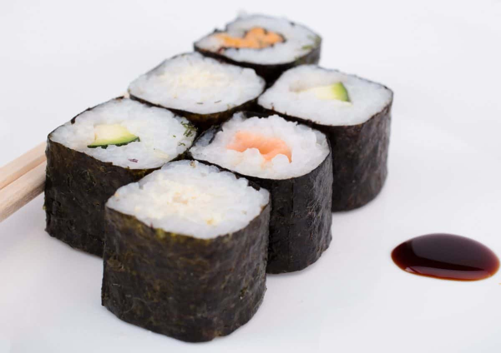

Sushi Brazilian style

Brazilian sushi is a delicious twist on traditional Japanese sushi — it’s bold, creamy, and often combines ingredients like cream cheese, tropical fruits, cooked meats, and sweet sauces. Perfect for sushi lovers who enjoy fusion flavors!
Is actually easier to do it then you think!
✨ Ingredients:
🍚 Sushi Rice:
- 2 cups sushi rice (or short-grain rice)
- 2 ½ cups water
- 1/4 cup rice vinegar
- 1 tablespoon sugar
- 1 teaspoon salt
🍣 For the Rolls:
- Store-bought nori sheets
- Cream cheese (cut into thin strips)
- Cooked shrimp or smoked salmon
- Ripe mango or avocado (sliced)
- Cucumber (optional, thinly sliced)
- Crispy onions (optional topping)
🍤 Optional Variations:
- Crab sticks (kani)
- Fried shrimp or chicken (for a hot roll)
- Strawberry slices (for sweet rolls)
- Teriyaki sauce or sweet soy sauce
To Serve:
- Soy sauce
- Wasabi
- Pickled ginger
- Teriyaki glaze or honey mustard (Brazilian-style touch!)
Instructions:
Prepare the Rice
- Rinse the rice under cold water until it runs clear.
- Cook with water: bring to a boil, then simmer covered for 15–20 minutes. Let rest 10 minutes off the heat.
- Mix rice vinegar, sugar, and salt in a small bowl. Gently fold into the warm rice. Let cool to room temperature.
Set Up Your Rolling Station
- Place a bamboo mat (or clean towel) on the table.
- Add a plastic wrap layer (optional).
- Place a nori sheet, shiny side down.
Add the Rice and Fillings
- Wet your fingers and spread a thin layer of rice on 2/3 of the nori.
- In the center, add fillings:
Cream cheese
- Cooked shrimp or salmon
- Mango or avocado
- Optional cucumber
Roll It Up
- Use the mat to roll it tightly from the bottom up.
- Press gently to seal and shape.
Slice and Serve
- Use a wet sharp knife to slice into 6–8 pieces.
- Top with crispy onions, teriyaki glaze, or a drizzle of cream cheese if desired.
For more like this sauce yourself checking the main page.